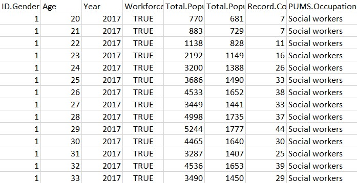

| 
View
Download clean csv file
Download raw csv file
|
R code - Record Data
R is used for cleaning labeled record data. The data used is Age by Gender of Social workers in the USA. All the additional unnecesary columns are dropped, the data is checked for missing NA values and the type of the columns of the dataset are fixed.
R code
|